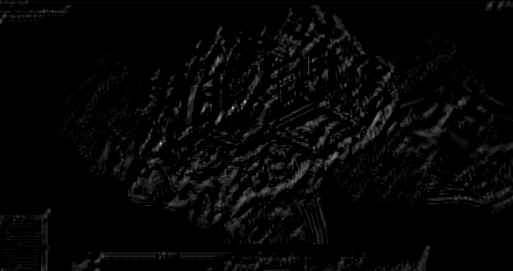

I wanted to create a bot that helps me automatically mine ores in the french MMO Dofus. The idea to create a bot for automating monotonous processes is not novel, however I saw this as great project to learn computer vision and improve my programming knowledge. A tutorial made by Learn Code by Gaming was followed to help create this bot, however the game used for the tutorial was Albion Online. The code written for this bot deviates substantially from the one written in the tutorial.
The purpose of this bot is to detect all the minable ores on screen and mine them completely autonomously. The user requirement is only to start the bot and bring the window of interest to the front.
The main method utilised for this bot is called template matching using the OpenCV module in python. Another essential method for the code to work which is heavily utilised is multi threading. These methods will be explored in the following sections.
Template matching is a method for searching and finding the location of a template image in a larger image. It slides the template over the input image and compares the template and patch of input image under the template image (Description taken from the OpenCV documentation).
The function in OpenCV is called using:
result = cv2.matchTemplate(img,temp,method)
The function takes 3 inputs:
There are 6 methods given by OpenCV. Depending on the application, one method may provide better results. The following table illustrates the algorithm behind the methods (taken from the OpenCV documentation).
$$R(x,y)=\sum_{x',y'}^{}(T'(x',y')-I'(x+x',y+y'))^2$$
| Template Match Methods | Formula |
|---|---|
| TM_SQDIFF | $$R(x,y)=\sum_{x',y'}^{}(T(x',y')-I(x+x',y+y'))^2$$ |
| TM_SQDIFF_NORMED | $$R(x,y)=\frac{\sum_{x',y'}^{}(T(x',y')-I(x+x',y+y'))^2}{\sum_{x',y'}^{}T(x','y)^2\cdot \sum_{x',y'}^{}I(x+x',y+y')^2}$$ |
| TM_CCORR | $$R(x,y)=\sum_{x',y'}^{}(T(x',y')\cdot I(x+x',y+y'))$$ |
| TM_CCORR_NORMED | $$R(x,y)=\frac{\sum_{x',y'}^{}(T(x',y')\cdot I(x+x',y+y'))}{\sum_{x',y'}^{}T(x','y)^2\cdot \sum_{x',y'}^{}I(x+x',y+y')^2}$$ |
| TM_CCOEFF | $$R(x,y)=\sum_{x',y'}^{}(T'(x',y')\cdot I'(x+x',y+y'))^2$$ |
| TM_CCOEFF_NORMED | $$R(x,y)=\frac{\sum_{x',y'}^{}(T(x',y')\cdot I(x+x',y+y'))}{\sum_{x',y'}^{}T'(x','y)^2\cdot \sum_{x',y'}^{}I'(x+x',y+y')^2}$$ |
I have found that TM_CCOEFF_NORMED worked the best for my specific use case. Other methods have returned a black screen or the function returned many false positives.
The cv.matchTemplate function returns a result matrix containing the confidence values, \(c\), based on the method used. The result matrix \(R\) is 2-Dimensional and has the same size as the image used for processing. The rows and columns of the result matrix dictate the \(x\) and \(y\) position of the confidence value on the image.
$$\begin{align}
R_{y\times x}=\begin{bmatrix}
c_{11} & c_{12} & \dots & c_{1x} \\
c_{21} & c_{22} & \dots & c_{2x} \\
\vdots & \vdots & \ddots & \vdots \\
c_{y1} & c_{y2} & \dots & c_{yx}
\end{bmatrix} & & c \in \mathbb{R}^+, 0\leq c \leq 1
\end{align}$$
Once the result matrix obtained, the locations of the best matches can be determined.
To help illustrate the process of template matching, an example screenshot is show below and passed through the template matching algorithm.
The image used as the template is a cropped image of the ore obtained from the screenshot.

The output of the template matching algorithm is saved into the result matrix and each confidence value is converted into pixel brightness. The confidence value is proportional to the brightness of the pixel, therefore the brighter a pixel is, the more likely that area of the image contains the template. This is displayed in the grayscale image shown above. The bright spots indicate a high probability of matching at that specific location.
It is important to note that the confidence values range between 0 and 1, due to various environmental conditions such as lighting or objects in the foreground the template might not exactly match and return a confidence value lower than that of other matches. To catch this, a threshold value is created and adjusted through experimentation.
Creating an effective way to screen capture at a decent fps is simple if we are simply talking about grabbing the entire screen. Python modules such as mss and pyautogui allow for efficient screen capture as those modules are optimised for speed. The method utilised in this bot is to call the win32 API directly. Faster than pyautogui but slower than mss, this method allows for a somewhat efficient screen capture while providing another key benefit. Calling the windows API allows for the capturing of specific active windows.
To start screen capturing with the win32 API, it is first important to understand some of the basics of the Windows OS. An application window is called a Device Context (DC), a DC is a structure that defines a set of graphic objects and their associated attributes, and the graphic modes that affect the output.
The Windows OS refers to each existing window with a window handle, these window handles can be used to specify which window is of interest. The handle of the game window can be obtained using the following function:
hWnd = win32gui.FindWindow(None, window_name)
The function FindWindow returns a value containing the handle of the window name. The handle can then be passed to different functions for manipulation.
[x1, y1, x2, y2] = win32gui.GetWindowRect(hWnd)
Calling the function GetWindowRect(hWnd) returns a tuple of coordinates corresponding to the top left and bottom right of the specific window.The width and height of the window can simply be calculated by taking the difference of the coordinates.
$$w = y_{2}-y_{1},\ h=x_{2}-x_{1}$$
The reason for calculating the width and height of the specified window is to create DC with the same dimensions where we can copy the graphical assets of the original DC to the newly created DC. This essentially functions as a screen grab. To create a DC, the following function is called to return a DC compatible with the window passed as input.
CreateCompatibleDC(hDC)
Next, a Bitmap needs to be crafted and rendered onto the compatible DC. A Bitmap is what stores the image data and represents the visual image of the window. Calling the following function creates a Bitmap compatible with the inputted DC with width \(w\) and height \(h\).
CreateCompatibleBitmap(DC, w, h)
Once the DC and Bitmap has been created, the image data needs to be copied from the window of interest into the compatible DC created previously. There are several ways to do this step, two functions serve to "paint" the Bitmap of the original window to the compatible DC.
BitBlt(hDC, (x,y), (w, h), hDCsrc, (x1, y1), rop)
windll.user32.PrintWindow(hWnd, hdcBlt, nFlags)
Both functions server our purpose, the first function BitBlt() was tried initially, however the returned image was a black screen. Different raster-operation codes were tested but returned similar results. The second function PrintWindow() is operationally similar, however this function returned the desired image output by trying different nFlags options. Documentation for both functions can be found online on the Microsoft Win32 API() page. The last step is to convert the Bitmap into a numpy array and remove the alpha channel to avoid errors when passing the screen grab into matchTemplate.
To get a continuous feed of images, the screen grab method is inputted into a while loop and called continuously until the loop is broken.
To get a continuous feed of images, the screen grab method is inputted into a while loop and called continuously until the loop is broken.
It seems logically sound to create a set of instructions that takes the location values from the cv.matchTemplate() and use them to move the cursor over each of those positions and click, however, this introduces a problem. The clicking algorithm will need be inside the loop to receive the clicking positions but this results in the clicking algorithm starting every time the loop is ran and won't give the character a chance to gather all the resources before the loop ends. To get around this, it is possible to create a global variable that informs the program when the bot is running. The global variable will be a boolean object and set to False when the bot is not clicking and True when the bot is clicking. This would work, however it is never advised to mess around with global variables as they can render the code very messy.
One way to get around this is by utilising multi-threading. This method allows the program to execute threads separately under one process. That allows the program to run a thread dedicated to clicking the returned coordinates. Once the locations of interest are returned, this information can be passed to the clicking thread and the bot can start clicking, once the bot is done clicking it will grab the latest locations and start clicking again.
There is a potential problem with this way of operating. If the thread happens to grab the location values while it is updating, it will cause complications. To prevent this, the three major processes of template matching, window capture and bot clicking will be put in their own thread and the return values will each be locked while updating.